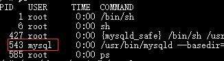

<!DOCTYPE html>
<html lang="zh" class="loading">
<head><meta name="generator" content="Hexo 3.9.0">
    <meta charset="UTF-8">
    <meta http-equiv="X-UA-Compatible" content="IE=edge,chrome=1">
    <meta name="viewport" content="width=device-width, minimum-scale=1.0, maximum-scale=1.0, user-scalable=no">
    <title>Docker官方起步指南学习笔记⑤——实例之搭建JavaWeb运行环境 - WhiteRobe&#39;s Blog</title>
    <meta name="apple-mobile-web-app-capable" content="yes">
    <meta name="apple-mobile-web-app-status-bar-style" content="black-translucent">
    <meta name="google" content="notranslate">
    <link href="https://cdnjs.cloudflare.com/ajax/libs/KaTeX/0.11.0/katex.min.css" rel="stylesheet">
    <meta name="keywords" content="WhiteRobe, Blog,"> 
    <meta name="description" content="着眼实例，从最简单的开始；你觉得再简单不过的东西，或许在别人眼里那就是悬崖。而我，愿作那攀岩绳。, 本次目标

本次目标 为构建一个Alpine+JDK8+Mysql+Tomcat的JAVAWEB运行环境。除了Java因法律问题等配置Oracle较为麻烦而选则直接拉取现有镜像之外，其它环境手动配,"> 
    <meta name="author" content="WhiteRobe"> 
    <link rel="alternative" href="atom.xml" title="WhiteRobe&#39;s Blog" type="application/atom+xml"> 
    <link rel="icon" href="/img/favicon.png"> 
    <link rel="stylesheet" href="//cdn.jsdelivr.net/npm/gitalk@1/dist/gitalk.css">
    <link rel="stylesheet" href="/css/animate.css">
    <link rel="stylesheet" href="/css/fira_code.css">
    <link rel="stylesheet" href="/css/diaspora.css">
    <script async src="https://busuanzi.ibruce.info/busuanzi/2.3/busuanzi.pure.mini.js"></script>
    
        <!--站内搜索API-->
        <script src="https://cdn.jsdelivr.net/algoliasearch/3/algoliasearch.min.js"></script>
        <link rel="stylesheet" href="https://cdn.jsdelivr.net/npm/instantsearch.css@7.3.1/themes/algolia-min.css" integrity="sha256-HB49n/BZjuqiCtQQf49OdZn63XuKFaxcIHWf0HNKte8=" crossorigin="anonymous">
        <script src="https://cdn.jsdelivr.net/npm/instantsearch.js@3.4.0/dist/instantsearch.production.min.js" integrity="sha256-pM0n88cBFRHpSn0N26ETsQdwpA7WAXJDvkHeCLh3ujI=" crossorigin="anonymous"></script>
    
    <!-- <script async src="//pagead2.googlesyndication.com/pagead/js/adsbygoogle.js"></script>
    <script>
          // No more ads!
         (adsbygoogle = window.adsbygoogle || []).push({
              google_ad_client: "ca-pub-8691406134231910",
              enable_page_level_ads: true
         });
    </script>
    <script async custom-element="amp-auto-ads"
        src="https://cdn.ampproject.org/v0/amp-auto-ads-0.1.js">
    </script> -->
</head>
</html>
<body class="loading">
    <span id="config-title" style="display:none">WhiteRobe&#39;s Blog</span>
    <div id="loader"></div>
    <div id="single">
    <div id="top" style="display: block; display: block;position: fixed; top: 0px;">
    <div class="bar" style="width: 0;"></div>
    <a class="icon-home image-icon" href="javascript:;" data-url="https://blog.whiterobe.top"></a>
    <div title="播放/暂停" class="icon-play"></div>
    <h3 class="subtitle">Docker官方起步指南学习笔记⑤——实例之搭建JavaWeb运行环境</h3>
    <div class="social">
        <!--<div class="like-icon">-->
            <!--<a href="javascript:;" class="likeThis active"><span class="icon-like"></span><span class="count">76</span></a>-->
        <!--</div>-->
        <div style="font-size: 1rem;margin-right: -10px">
          分享此文：
        </div>
        <div>
          <div class="share">
              <a title="获取文章地址二维码" class="icon-scan" href="javascript:;"></a>
          </div>
          <div id="qr"></div>
        </div>
    </div>
    <div class="scrollbar"></div>
</div>

    <div class="section" style="margin-top: 50px">
        <div class="article">
    <div class='main'>
        <h1 class="title">Docker官方起步指南学习笔记⑤——实例之搭建JavaWeb运行环境</h1>
        <div class="stuff">
            <span>九月 18, 2019</span>
            <span id="busuanzi_container_page_pv" class="busuanzi_page" style="display:none">本文总阅读量<div id="busuanzi_value_page_pv" style="display: inline;">1</div>次</span>
            
  <ul class="post-tags-list"><li class="post-tags-list-item"><a class="post-tags-list-link" href="/tags/Docker/">Docker</a></li><li class="post-tags-list-item"><a class="post-tags-list-link" href="/tags/版本控制/">版本控制</a></li></ul>


        </div>
        <div class="low-resolution-warn-info">当前设备屏幕尺寸过小，推荐使用PC模式浏览。</div>
        <div class="content markdown">
            <h1 id="本次目标"><a class="markdownIt-Anchor" href="#本次目标"></a> 本次目标</h1>
<blockquote>
<p><strong>本次目标</strong> 为构建一个Alpine+JDK8+Mysql+Tomcat的JAVAWEB运行环境。除了Java因法律问题等配置Oracle较为麻烦而选则直接拉取现有镜像之外，其它环境手动配置。</p>
</blockquote>
<hr>
<h1 id="搭建环境"><a class="markdownIt-Anchor" href="#搭建环境"></a> 搭建环境</h1>
<h2 id="java-环境"><a class="markdownIt-Anchor" href="#java-环境"></a> JAVA 环境</h2>
<blockquote>
<p><code>anapsix/alpine-java</code> 的 <a href="https://hub.docker.com/r/anapsix/alpine-java" target="_blank" rel="noopener">&gt;DockerHub地址&lt;</a></p>
</blockquote>
<p>直接拉取带有Oracle JDK8的Alpine镜像(该镜像已经过瘦身)：</p>
<figure class="highlight shell"><table><tr><td class="gutter"><pre><span class="line">1</span><br></pre></td><td class="code"><pre><span class="line">docker run -dit -p 8080:8080 --name=web anapsix/alpine-java</span><br></pre></td></tr></table></figure>
<p>拉取完毕后进入容器并检测Java环境：</p>
<figure class="highlight shell"><table><tr><td class="gutter"><pre><span class="line">1</span><br><span class="line">2</span><br></pre></td><td class="code"><pre><span class="line">docker exec -it web sh</span><br><span class="line">java -version</span><br></pre></td></tr></table></figure>
<h2 id="部署tomcat"><a class="markdownIt-Anchor" href="#部署tomcat"></a> 部署Tomcat</h2>
<p>首先下载Tomcat到镜像中，这里采用<code>wget</code>工具：</p>
<figure class="highlight shell"><table><tr><td class="gutter"><pre><span class="line">1</span><br></pre></td><td class="code"><pre><span class="line">wget http://mirrors.tuna.tsinghua.edu.cn/apache/tomcat/tomcat-8/v8.5.38/bin/apache-tomcat-8.5.38.tar.gz</span><br></pre></td></tr></table></figure>
<blockquote>
<p>Tips:获取tomcat的压缩包地址可以到<a href="https://tomcat.apache.org/download-80.cgi" target="_blank" rel="noopener">&gt;官方页面&lt;</a>获取，注意版本号和JDK的对应关系。</p>
</blockquote>
<p>下载完毕后进行解压缩，并移除无用的压缩包：</p>
<figure class="highlight shell"><table><tr><td class="gutter"><pre><span class="line">1</span><br><span class="line">2</span><br></pre></td><td class="code"><pre><span class="line">tar -zxvf apache* </span><br><span class="line">rm apache-tomcat-8.5.38.tar.gz</span><br></pre></td></tr></table></figure>
<p>尝试启动tomcat(注意启动容器时已经将Tomcat默认的8080端口映射到宿主机的8080端口了)：</p>
<figure class="highlight shell"><table><tr><td class="gutter"><pre><span class="line">1</span><br></pre></td><td class="code"><pre><span class="line">/apache-tomcat-8.5.38/bin/startup.sh</span><br></pre></td></tr></table></figure>
<p>访问网站：<code>http://localhost:8080/</code>，可以见到Tomcat小猫，说明Tomcat服务器已经安装完毕了。</p>
<h2 id="部署mysqlmariadb"><a class="markdownIt-Anchor" href="#部署mysqlmariadb"></a> 部署Mysql(MariaDB)</h2>
<blockquote>
<p><strong>注意</strong>：由于Mysql被收购的原因，出于对其开源性的担忧虑，转用其社区分支MariaDB。MariaDB在语法上与Mysql没有任何区别。</p>
</blockquote>
<p>Alpine自带包管理工具，且官方仓库里自带Mysql的社区版MariaDB，因此，直接执行以下操作即可安装mysql(mariadb)：</p>
<figure class="highlight shell"><table><tr><td class="gutter"><pre><span class="line">1</span><br></pre></td><td class="code"><pre><span class="line">apk add mysql --no-cache</span><br></pre></td></tr></table></figure>
<p><strong>但是这样安装会缺少访问数据库的客户端</strong>，因此可以选择直接安装MariaDB及其客户端，并下载相关依赖(<a href="https://wiki.alpinelinux.org/wiki/MariaDB" target="_blank" rel="noopener">&gt;参见此处&lt;</a>)：</p>
<figure class="highlight shell"><table><tr><td class="gutter"><pre><span class="line">1</span><br></pre></td><td class="code"><pre><span class="line">apk add mariadb mariadb-client --no-cache</span><br></pre></td></tr></table></figure>
<p>总的大小在：<code>OK: 163 MiB in 35 packages</code></p>
<p>安装mysql数据库，指定数据存放位置：</p>
<figure class="highlight shell"><table><tr><td class="gutter"><pre><span class="line">1</span><br></pre></td><td class="code"><pre><span class="line">mysql_install_db --user=mysql --datadir=/var/lib/mysql</span><br></pre></td></tr></table></figure>
<p>接下来尝试启动mariadb服务(这一步很重要，否则会报2002错误)：</p>
<figure class="highlight shell"><table><tr><td class="gutter"><pre><span class="line">1</span><br></pre></td><td class="code"><pre><span class="line">/usr/share/mariadb/mysql.server start</span><br></pre></td></tr></table></figure>
<blockquote>
<p>Tips：可以使用<code>find / -name mysql.server</code>找到数据库服务器的具体位置</p>
</blockquote>
<p>查看mariadb服务是否启动：</p>
<figure class="highlight shell"><table><tr><td class="gutter"><pre><span class="line">1</span><br></pre></td><td class="code"><pre><span class="line">ps aux | grep mysql</span><br></pre></td></tr></table></figure>
<p></p>
<blockquote>
<p>Tip：常见异常解决方式——</p>
<ul>
<li>如果报错<code>rc-service not found</code>，请执行命令<code>apk add openrc --no-cache</code>，后期可以把这个包精简掉。</li>
<li>如果报错<code>ERROR 2002 (HY000): Can't connect to local MySQL server through socket '/run/mysqld/mysqld.sock' (2)</code>，请执行指令重启mysql：<code>/usr/share/mariadb/mysql.server restart</code>；若仍然无法成功，请<a href="https://stackoverflow.com/questions/22290519/mysql-error-2002-hy000-cant-connect-to-local-mysql-server-through-socket-v" target="_blank" rel="noopener">&gt;参考此处&lt;</a>.</li>
</ul>
</blockquote>
<p>修改其默认管理员账户密码：</p>
<figure class="highlight shell"><table><tr><td class="gutter"><pre><span class="line">1</span><br><span class="line">2</span><br><span class="line">3</span><br></pre></td><td class="code"><pre><span class="line">mysql</span><br><span class="line">update mysql.user set password=password('新密码') where User='用户名' and Host='localhost';</span><br><span class="line">flush privileges;</span><br></pre></td></tr></table></figure>
<p>或直接执行以下脚本重设密码：</p>
<figure class="highlight shell"><table><tr><td class="gutter"><pre><span class="line">1</span><br></pre></td><td class="code"><pre><span class="line">/usr/bin/mysql_secure_installation</span><br></pre></td></tr></table></figure>
<p>登陆mysql:</p>
<figure class="highlight shell"><table><tr><td class="gutter"><pre><span class="line">1</span><br><span class="line">2</span><br></pre></td><td class="code"><pre><span class="line">mysql -u root -p</span><br><span class="line">输入密码</span><br></pre></td></tr></table></figure>
<p>有可能的话，还需要注意一下中文编码的问题，<a href="https://blog.csdn.net/Shenpibaipao/article/details/70740470" target="_blank" rel="noopener">&gt;参考此处&lt;</a>。</p>
<h2 id="打包镜像黑箱镜像"><a class="markdownIt-Anchor" href="#打包镜像黑箱镜像"></a> 打包镜像(黑箱镜像)</h2>
<figure class="highlight shell"><table><tr><td class="gutter"><pre><span class="line">1</span><br></pre></td><td class="code"><pre><span class="line">docker commit -a Shenpibaipao@CSDN -m javaweb_env -c "EXPOSE 8080" web your_dockerhubID/image_name:v1.0</span><br></pre></td></tr></table></figure>
<hr>
<h1 id="dockerfile白盒镜像"><a class="markdownIt-Anchor" href="#dockerfile白盒镜像"></a> Dockerfile(白盒镜像)</h1>
<figure class="highlight dockerfile"><table><tr><td class="gutter"><pre><span class="line">1</span><br><span class="line">2</span><br><span class="line">3</span><br><span class="line">4</span><br><span class="line">5</span><br><span class="line">6</span><br><span class="line">7</span><br><span class="line">8</span><br></pre></td><td class="code"><pre><span class="line"><span class="keyword">FROM</span> anapsix/alpine-java</span><br><span class="line"><span class="keyword">RUN</span><span class="bash"> wget http://mirrors.tuna.tsinghua.edu.cn/apache/tomcat/tomcat-8/v8.5.38/bin/apache-tomcat-8.5.38.tar.gz</span></span><br><span class="line"><span class="keyword">RUN</span><span class="bash"> tar -zxvf apache* </span></span><br><span class="line"><span class="keyword">RUN</span><span class="bash"> rm apache-tomcat-8.5.38.tar.gz</span></span><br><span class="line"><span class="keyword">RUN</span><span class="bash"> apk add mariadb mariadb-client --no-cache</span></span><br><span class="line"><span class="keyword">RUN</span><span class="bash"> mysql_install_db --user=mysql --datadir=/var/lib/mysql</span></span><br><span class="line"><span class="keyword">EXPOSE</span> <span class="number">8080</span></span><br><span class="line"><span class="keyword">CMD</span><span class="bash">[<span class="string">"/usr/share/mariadb/mysql.server"</span>, <span class="string">"start"</span>]</span></span><br></pre></td></tr></table></figure>
<hr>
<h1 id="转载mysql社区版安装指南"><a class="markdownIt-Anchor" href="#转载mysql社区版安装指南"></a> 转载:Mysql社区版安装指南</h1>
<blockquote>
<p><a href="https://zazalu.space/2019/06/14/ubuntu18-04%E5%AE%89%E8%A3%85mysql8-0-16-Community/" target="_blank" rel="noopener">原文地址</a>@zazalu.space</p>
</blockquote>
<p>首先mysql已经不是以前的mysql了，自从加入oracle旗下后，各类付费mysql产品已经陆续上线了。目前最新的付费企业mysql版中，居然已经支持了nosql！但是非常遗憾！这个功能在社区版（也就是免费开源版）中是不支持的！╮(╯▽╰)╭ 好吧，想白嫖nosql还是老老实实用别的把！Oracel爸爸不收钱是不可能的</p>
<p>今天记录安装的是使用ubuntu18.04安装MySQL Community Edition 8.0.16;MySQL Community Edition就是我们最熟知的mysql啦，可以白嫖的mysql啦！</p>
<ol>
<li>打开mysql官方下载网页</li>
</ol>
<p><a href="https://dev.mysql.com/downloads/" target="_blank" rel="noopener">https://dev.mysql.com/downloads/</a> ,寻找如下的位置：</p>
<figure class="highlight plain"><table><tr><td class="gutter"><pre><span class="line">1</span><br><span class="line">2</span><br><span class="line">3</span><br><span class="line">4</span><br></pre></td><td class="code"><pre><span class="line">MySQL Community Server (GPL)</span><br><span class="line">(Current Generally Available Release: 8.0.16)</span><br><span class="line">MySQL Community Server is the world&apos;s most popular open source database.</span><br><span class="line">DOWNLOAD</span><br></pre></td></tr></table></figure>
<p>随后我们来到了下载页面，先选择我们的操作系统版本；我刻意没有截图下面的那些各种各样的软件包，那是因为选择安装最新的8.0x，官方已经强力推荐使用包管理工具来安装了！所以我们没必要去看那些名字复杂，乱七八糟的各种安装包了！</p>
<p>点击推荐我们使用apt下载mysql的那个企鹅图片，我们会跳转到apt下载mysql的专栏网页。</p>
<p>该网页分成三个部分，第一部分介绍apt安装mysql的优点和它目前支持的版本，第二部分是一个快速开始的操作文档会教你怎么用！，第三部分是一个deb下载包mysql-apt-config_0.8.13-1_all.deb，可以先下好保存在本地，待会要用</p>
<p>下载好<code>mysql-apt-config_0.8.13-1_all.deb</code>后，你如果看不懂官方的操作文档，或者对其内部用到的东西感兴趣，那么看下面的内容是最好的！</p>
<ol start="2">
<li>开始安装<br>
① 为了文件摆放合理，请创建一个<code>mysql-config-deb</code>的文件夹，随后把你下载好的mysql-apt-config_0.8.13-1_all.deb移动过去，并在当前文件夹开启terminal</li>
</ol>
<p>② 在terminal内输入<code>sudo dpkg -i mysql-apt-config_0.8.13-1_all.deb</code>，随后会弹出一个配置界面，除非你有特殊需求，不然直接选择OK即可，最后你会得到如下输出：</p>
<figure class="highlight plain"><table><tr><td class="gutter"><pre><span class="line">1</span><br><span class="line">2</span><br><span class="line">3</span><br><span class="line">4</span><br><span class="line">5</span><br><span class="line">6</span><br></pre></td><td class="code"><pre><span class="line">(Reading database ... 224799 files and directories currently installed.)</span><br><span class="line">Preparing to unpack mysql-apt-config_0.8.13-1_all.deb ...</span><br><span class="line">Unpacking mysql-apt-config (0.8.13-1) over (0.8.13-1) ...</span><br><span class="line">Setting up mysql-apt-config (0.8.13-1) ...</span><br><span class="line">Warning: apt-key should not be used in scripts (called from postinst maintainerscript of the package mysql-apt-config)</span><br><span class="line">OK</span><br></pre></td></tr></table></figure>
<blockquote>
<p>[讲解]: <code>sudo dpkg -i mysql-apt-config_0.8.13-1_all.deb</code> 这一步是使用dpkg工具运行我们的mysql-config的程序，dpkg是ubuntu这类linux系统的底层包管理工具，也负责管理.deb结果的程序包。 mysql-cofig弹出的配置界面用于选择你要安装的是什么版本的mysql以及想要安装哪些mysql插件，选择完毕后，这个工具会生成一个类似source.list的东西，内部记录了mysql的apt软件仓库的服务器地址，用于后续的apt工具可以正常的安装mysql，会告知apt工具应该去检索哪些软件仓库的软件包。当然这个步骤其实也可以手动来添加这些apt的相关配置，如果你对apt的软件仓库配置非常熟悉，那么可以自己尝试，或者从这篇文档开始https://dev.mysql.com/doc/mysql-apt-repo-quick-guide/en/#repo-qg-apt-repo-manual-setup</p>
</blockquote>
<p>③ 输入<code>sudo apt-get update</code>，apt-get就开始重新更新软件仓库服务器内的所有包文件索引，在这里使用该命令的目的是，拉取mysql的apt软件仓库的服务器上的包索引列表。<br>
[讲解]: apt工具是dpkg工具的上层软件，它拥有更强的包管理功能；它是利用自身软件仓库（source.list）内指定的源服务器地址内包含的包索引列表来正常的安装我们要安装的软件应用。这一步骤也正是在更新这些包索引列表，目的是添加我们刚刚引入的mysql的源软件仓库服务器内包含的包索引列表。可以把这个操作类比成电脑管家的查看更新。完成这步骤后，apt工具就会知道如何去下载安装我们的mysql了！所以这个步骤是使用apt安装mysql的关键步骤，是必须执行的哦！</p>
<p>④ 输入<code>sudo apt-get install mysql-server</code>，提示是否安装选Y，随后apt工具会根据本地的包索引列表去下载我们的mysql-server对应的包程序！为什么apt可以自我管理怎么去安装mysql-server，我们从这条命令也没有告知他安装啥版本，但是它就会去自行安装我们的8.0x版本。这一切都归功于我们前面对apt软件仓库的配置！</p>
<p>⑤ 等待片刻后，会弹出mysql一个小的配置程序界面，要求你输入下root用户的密码（输入2次），并且选择加密方式，8.0x使用了新的加密方式，也是官方推荐的，所以选推荐的就完事了！</p>
<p>⑥ 看到如下输出，恭喜你安装成功！（入坑成功！）</p>
<figure class="highlight plain"><table><tr><td class="gutter"><pre><span class="line">1</span><br><span class="line">2</span><br><span class="line">3</span><br><span class="line">4</span><br><span class="line">5</span><br><span class="line">6</span><br><span class="line">7</span><br><span class="line">8</span><br><span class="line">9</span><br><span class="line">10</span><br><span class="line">11</span><br></pre></td><td class="code"><pre><span class="line">emitting double-array: 100% |###########################################| </span><br><span class="line">reading /usr/share/mecab/dic/ipadic/matrix.def ... 1316x1316</span><br><span class="line">emitting matrix      : 100% |###########################################| </span><br><span class="line"></span><br><span class="line">done!</span><br><span class="line">update-alternatives: using /var/lib/mecab/dic/ipadic-utf8 to provide /var/lib/mecab/dic/debian (mecab-dictionary) in auto mode</span><br><span class="line">Setting up mysql-community-server (8.0.16-2ubuntu18.04) ...</span><br><span class="line">update-alternatives: using /etc/mysql/mysql.cnf to provide /etc/mysql/my.cnf (my.cnf) in auto mode</span><br><span class="line">Created symlink /etc/systemd/system/multi-user.target.wants/mysql.service → /lib/systemd/system/mysql.service.</span><br><span class="line">Setting up mysql-server (8.0.16-2ubuntu18.04) ...</span><br><span class="line">Processing triggers for libc-bin (2.27-3ubuntu1) ...</span><br></pre></td></tr></table></figure>
<p>⑦ 使用<code>sudo service mysql status</code>，查看mysql目前的状态，输出如下：</p>
<figure class="highlight plain"><table><tr><td class="gutter"><pre><span class="line">1</span><br><span class="line">2</span><br><span class="line">3</span><br><span class="line">4</span><br><span class="line">5</span><br><span class="line">6</span><br><span class="line">7</span><br><span class="line">8</span><br><span class="line">9</span><br><span class="line">10</span><br><span class="line">11</span><br><span class="line">12</span><br><span class="line">13</span><br><span class="line">14</span><br></pre></td><td class="code"><pre><span class="line">● mysql.service - MySQL Community Server</span><br><span class="line">   Loaded: loaded (/lib/systemd/system/mysql.service; enabled; vendor preset: enabled)</span><br><span class="line">   Active: active (running) since Fri 2019-06-14 11:06:40 CST; 21s ago</span><br><span class="line">     Docs: man:mysqld(8)</span><br><span class="line">           http://dev.mysql.com/doc/refman/en/using-systemd.html</span><br><span class="line">  Process: 18991 ExecStartPre=/usr/share/mysql-8.0/mysql-systemd-start pre (code=exited, status=0/SUCCESS)</span><br><span class="line"> Main PID: 19030 (mysqld)</span><br><span class="line">   Status: &quot;SERVER_OPERATING&quot;</span><br><span class="line">    Tasks: 39 (limit: 4915)</span><br><span class="line">   CGroup: /system.slice/mysql.service</span><br><span class="line">           └─19030 /usr/sbin/mysqld</span><br><span class="line"></span><br><span class="line">6月 14 11:06:35 zazalu-ThinkPad-E480 systemd[1]: Starting MySQL Community Server...</span><br><span class="line">6月 14 11:06:40 zazalu-ThinkPad-E480 systemd[1]: Started MySQL Community Server.</span><br></pre></td></tr></table></figure>
<p>mysql的安装程序真的越来越傻瓜了！因为它不仅在安装完后自动运行了mysql，同时它还把它搞成了一个service，这样就可以在开机的时候自启动了！</p>
<ol start="3">
<li>其他控制命令</li>
</ol>
<p>关闭mysql，这里推荐如下命令，也是官方推荐的，当然你kill进程也是莫得问题的:<code>sudo service mysql stop</code></p>
<p>重启mysql:<code>sudo service mysql start</code></p>
<ol start="4">
<li>卸载</li>
</ol>
<p>由于使用apt安装，所以卸载也会变得及其傻瓜式，使用如下命令即可:<br>
<code>sudo apt-get remove mysql-server</code></p>
<p>有些人喜欢下一些mysql的插件来增强mysql的功能，使用如下命令卸载这些插件:<br>
<code>sudo apt-get autoremove</code><br>
或者指定包名:<br>
<code>sudo apt-get remove package-name</code></p>
<blockquote>
<p>不知道有哪些包，先用如下命令查看:<code>dpkg -l | grep mysql | grep ii</code></p>
</blockquote>

            <!--[if lt IE 9]><script>document.createElement('audio');</script><![endif]-->
            <audio id="audio" loop="1" preload="auto" controls="controls" data-autoplay="true">
                <source type="audio/mpeg" src="">
            </audio>
            
                <ul id="audio-list" style="display:none">
                    
                        
                            <li title='0' data-url='https://gitee.com/shenpibaipao/wr-diaspora/raw/master/source/audio/jinyecheng.mp3'></li>
                        
                    
                        
                            <li title='1' data-url='https://gitee.com/shenpibaipao/wr-diaspora/raw/master/source/audio/juhuatai.mp3'></li>
                        
                    
                        
                            <li title='2' data-url='https://gitee.com/shenpibaipao/wr-diaspora/raw/master/source/audio/MapleStory.mp3'></li>
                        
                    
                </ul>
            
        </div>
        
    <div id='gitalk-container' class="comment link"
        data-ae='true'
        data-ci='5b763306cd7b9d9c3981'
        data-cs='c31e9bf78a807055f5439caea747b09d1d9c8f18'
        data-r='image-blog.io'
        data-o='WhiteRobe'
        data-a='WhiteRobe'
        data-d='false'
    >查看评论</div>


    </div>
    
        <div class='side'>
            <ol class="toc"><li class="toc-item toc-level-1"><a class="toc-link" href="#本次目标"><span class="toc-number">1.</span> <span class="toc-text"> 本次目标</span></a></li><li class="toc-item toc-level-1"><a class="toc-link" href="#搭建环境"><span class="toc-number">2.</span> <span class="toc-text"> 搭建环境</span></a><ol class="toc-child"><li class="toc-item toc-level-2"><a class="toc-link" href="#java-环境"><span class="toc-number">2.1.</span> <span class="toc-text"> JAVA 环境</span></a></li><li class="toc-item toc-level-2"><a class="toc-link" href="#部署tomcat"><span class="toc-number">2.2.</span> <span class="toc-text"> 部署Tomcat</span></a></li><li class="toc-item toc-level-2"><a class="toc-link" href="#部署mysqlmariadb"><span class="toc-number">2.3.</span> <span class="toc-text"> 部署Mysql(MariaDB)</span></a></li><li class="toc-item toc-level-2"><a class="toc-link" href="#打包镜像黑箱镜像"><span class="toc-number">2.4.</span> <span class="toc-text"> 打包镜像(黑箱镜像)</span></a></li></ol></li><li class="toc-item toc-level-1"><a class="toc-link" href="#dockerfile白盒镜像"><span class="toc-number">3.</span> <span class="toc-text"> Dockerfile(白盒镜像)</span></a></li><li class="toc-item toc-level-1"><a class="toc-link" href="#转载mysql社区版安装指南"><span class="toc-number">4.</span> <span class="toc-text"> 转载:Mysql社区版安装指南</span></a></li></ol>
        </div>
    
</div>


    </div>
    <!--下悬浮返回键-->
    <div style="background: white; height:30px; width: 30px; border-radius: 16px; position: fixed; bottom: 1.5rem; right: 1.5rem; border: 2px solid rgba(0, 0, 0, 0.5)">
      <a class="icon-left image-icon" style="left:4px; top:4px" href="javascript:history.back()"></a>
    </div>
</div>
</body>
<script src="//cdn.jsdelivr.net/npm/gitalk@1/dist/gitalk.min.js"></script>
<script src="//lib.baomitu.com/jquery/1.8.3/jquery.min.js"></script>
<script src="/js/plugin.js"></script>
<script src="/js/diaspora.js"></script>
<link rel="stylesheet" href="/photoswipe/photoswipe.css">
<link rel="stylesheet" href="/photoswipe/default-skin/default-skin.css">
<script src="/photoswipe/photoswipe.min.js"></script>
<script src="/photoswipe/photoswipe-ui-default.min.js"></script>

<!-- Root element of PhotoSwipe. Must have class pswp. -->
<div class="pswp" tabindex="-1" role="dialog" aria-hidden="true">
    <!-- Background of PhotoSwipe. 
         It's a separate element as animating opacity is faster than rgba(). -->
    <div class="pswp__bg"></div>
    <!-- Slides wrapper with overflow:hidden. -->
    <div class="pswp__scroll-wrap">
        <!-- Container that holds slides. 
            PhotoSwipe keeps only 3 of them in the DOM to save memory.
            Don't modify these 3 pswp__item elements, data is added later on. -->
        <div class="pswp__container">
            <div class="pswp__item"></div>
            <div class="pswp__item"></div>
            <div class="pswp__item"></div>
        </div>
        <!-- Default (PhotoSwipeUI_Default) interface on top of sliding area. Can be changed. -->
        <div class="pswp__ui pswp__ui--hidden">
            <div class="pswp__top-bar">
                <!--  Controls are self-explanatory. Order can be changed. -->
                <div class="pswp__counter"></div>
                <button class="pswp__button pswp__button--close" title="Close (Esc)"></button>
                <button class="pswp__button pswp__button--share" title="Share"></button>
                <button class="pswp__button pswp__button--fs" title="Toggle fullscreen"></button>
                <button class="pswp__button pswp__button--zoom" title="Zoom in/out"></button>
                <!-- Preloader demo http://codepen.io/dimsemenov/pen/yyBWoR -->
                <!-- element will get class pswp__preloader--active when preloader is running -->
                <div class="pswp__preloader">
                    <div class="pswp__preloader__icn">
                      <div class="pswp__preloader__cut">
                        <div class="pswp__preloader__donut"></div>
                      </div>
                    </div>
                </div>
            </div>
            <div class="pswp__share-modal pswp__share-modal--hidden pswp__single-tap">
                <div class="pswp__share-tooltip"></div> 
            </div>
            <button class="pswp__button pswp__button--arrow--left" title="Previous (arrow left)">
            </button>
            <button class="pswp__button pswp__button--arrow--right" title="Next (arrow right)">
            </button>
            <div class="pswp__caption">
                <div class="pswp__caption__center"></div>
            </div>
        </div>
    </div>
</div>


</html>
